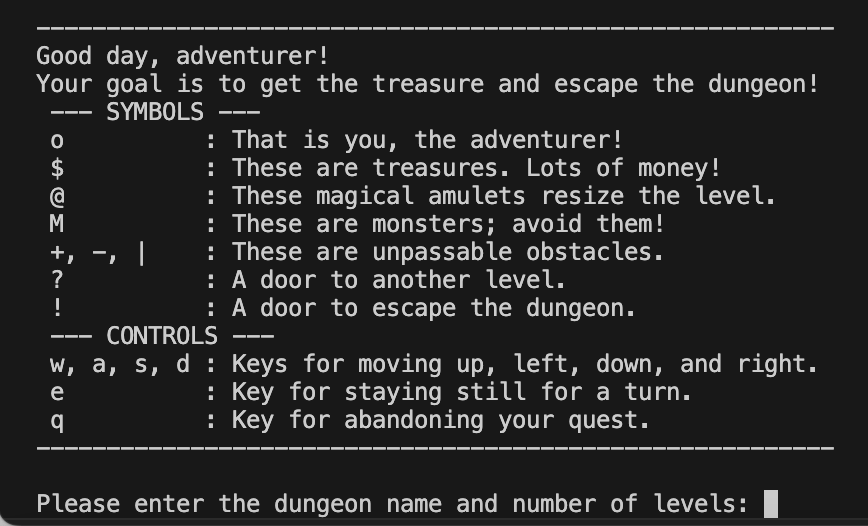

Project 1: "MyTetris" Game - Ruby

A project that I have been fond to work on and develop myself was my very own version of Tetris! Throughout the development of the game,
I was determined to keep the same functions of the orginial Tetris that people know and love. The same pieces have been implemented, row removal system and so on have been kept and implemented as the world is familar with it. Making my own version of tetris, I obviously could not just make the original game that everyone knows so...
Here are the changes I have made:
Cheat Piece: At the cost of 100 of your total score, you are allowed to create a "cheat piece". This cheat is a 1x1 piece that operates just like a normal piece but could be massively beneficial if you are trying to clear a row and your speed is becoming dangerous to maneuvuer around.
New Pieces: Along side the cheat piece that I have implemented, I have also added 3 new pieces onto the original tetris pieces to make the game more of a challenge. The pieces are a 2x2 with a 1x1 on top, a triangle piece which is a 2x1 with a 1x1 attached onto the 2 long side to make a triangle and finally, a long 5x1 piece!
Levels / Speed: While playing tetris myself, I felt that the game took too long to get difficult. With this I scrapped the progressive level system and created a forever incrementing speed difficulty. As the user keeps placing pieces without clearing rows, the speed increases a slight percentage from it's previous speed. This continues until the user finally clears a row where the speed gets reset to what it started at.
Project 2: My Website! - HTML / CSS
This very thing that you are looking at is a project that I have worked on myself. This uses 5 html files, one for each button which contains all the information that you see on them. Alongside the html files, as you can see, you are able to swap between two different themes through the slider that was created. I decided
to start this project once I found out that Texas A&M actually gives us all a website if you look up people.tamu.edu and their net id after.
After realizing this, I remembered the time I worked on HTML as my very first language ever in a middle school class. This took me way back and I decided that it would be valuable to learn the language properly as well as delve into the nitty gritty of HTML, CSS and JavaScript. Making my own personal website as a project is a great way for me to learn those skills as well as showcase things I have worked on in the past which is all that this page is file is dedicated to.
Key Languages and Lessons:
HTML:
Diving back into HTML since what has been 8+ years, I have learned a lot of the intricaices of web development and how important having clean and well formated code is in success to creating an intuitive, clean and attractive website. If you take your time and write out lists, headers, paragraphs and so on with proper indentation, spacing, etc. you will essentially get a reflection of that in your website.
I learned this while creating my landing page as I was not as careful as I am now with my formating in my IDE. Once I did start to format things a little nicer in my IDE because I myself was getting a little mixed up with where things were, I noticed that it was much easier to navigate through my file as well as I can see the actual website essentially mirror my html file.CSS:
CSS for me was a language that I was not as familiar with compared to HTML. Seeing how CSS works with HTML and how customizable it was I quickly fell in love. Seeing my ideas come to life kept me dedicated to the project as I could see instant changes and didn't have to worry about compiling and debugging in the normal sense when using C++, Ruby etc.
I have had issues throughout CSS that I have learned from such as creating different formats for different headers/pargagraphs when not intended due to poor naming/organization in my CSS file. Learning from that, I have sectioned off portions for style forms based off of need then the kind of style. Overall, CSS and HTML implementation have been a joy!
Obviously, you are currently looking at the project so I will not be including a refrence image as the current reference image is whatever is coming through your retina! :)
Project 3: Dungeon Crawler

My third project is a project that was done in C++. I call this Dungeon Crawler. Dungeon Crawler is the outline for a game that would allow users to interact with an imported map (Dungeon). I haven't had time yet to create graphics/gui for the game so this is pure logic.
The user interacts with a game map in which the objective is to go throughout the map and collect treasures while avoiding monsters that are chasing them that would see the user off and end the game.
As this is pure logics as of know, the user can test out
and see if they would make it through the Dungeon through .txt files! All of the interactions that the user has with the game is done throughout the terminal where they can input commands based off of prompts that the game asks of them.
I am currently trying to see how I could make graphics for the game!
As you can see from the provided image, once the game is compiled, the user is prompted with a section that describes everything that the user will see within the game. Tehy are shown their player icon, treasure icon, obstacles, controls and more.
From this, the user will then input a level out of the 6 provided. 3 easy levls, and 4 hard levls. The user will then play with those .txt files using the given instructions that they were given! Obviously, having a logic based game done through only a terminal is not the best so as i've mentioned before, graphics and art will be worked on in the near future!